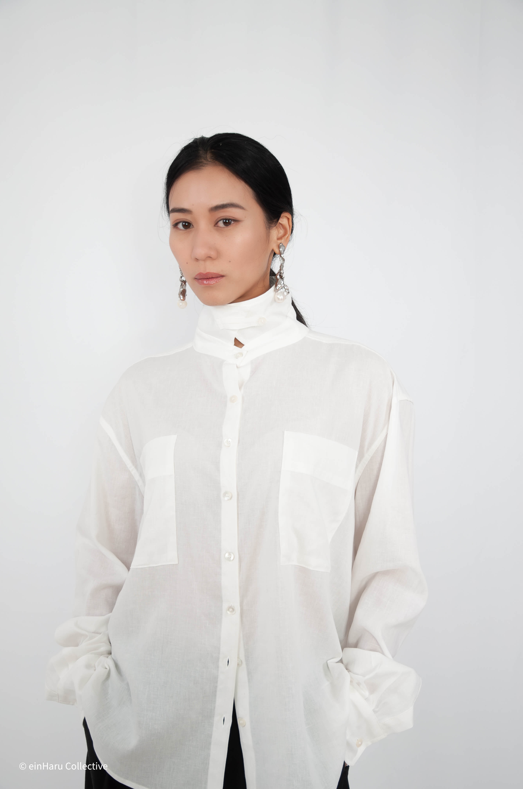
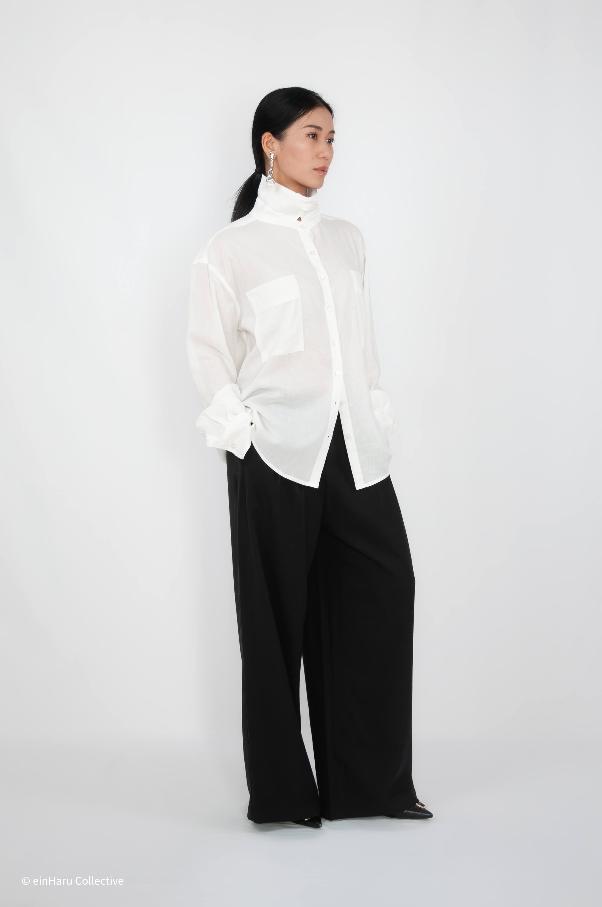
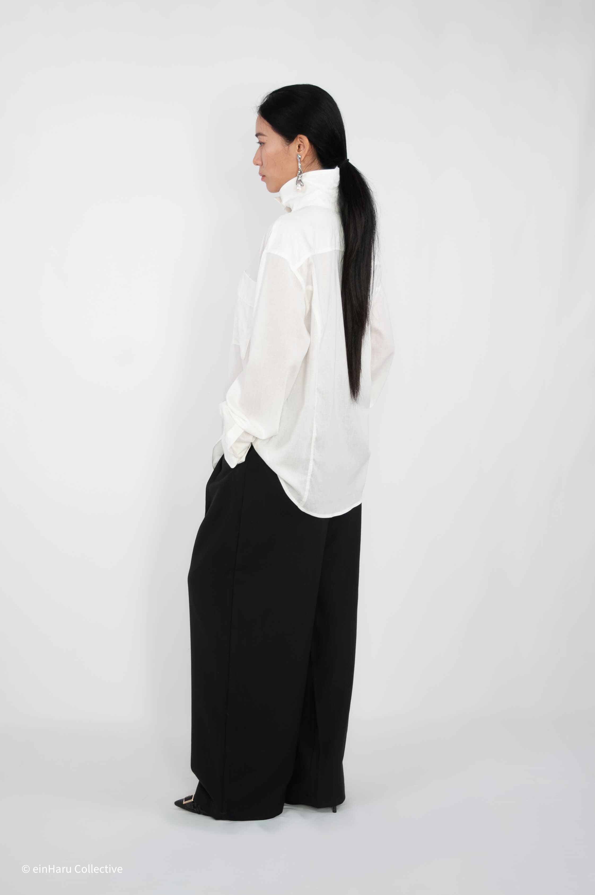
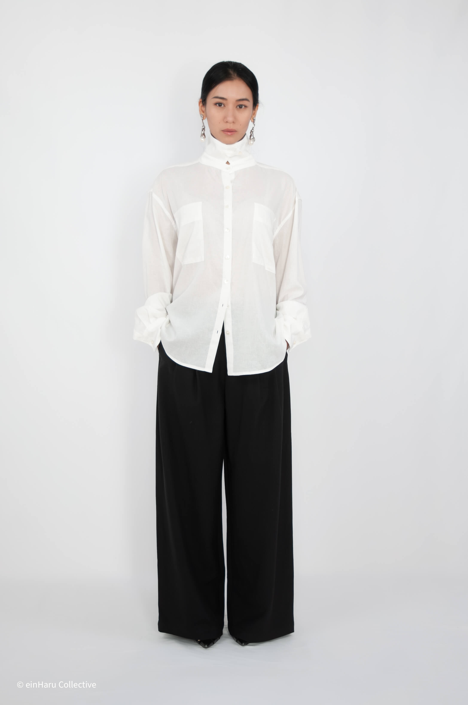
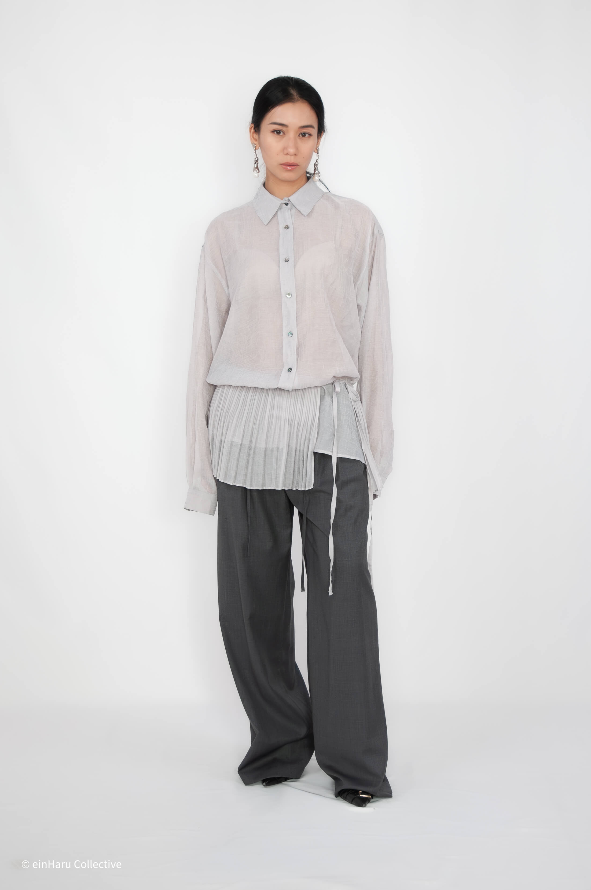

How to Style an Oversized Shirt in 2026
The oversized shirt is the most versatile piece in a minimalist wardrobe, and the most commonly styled badly. Volume without intention reads as shapeless. Here's how to make the silhouette work.
How to style an oversized shirt: the tuck, what to wear below, layering rules, and five complete outfits.

The tuck is everything
An oversized shirt worn completely untucked over straight trousers or jeans is the default, and it usually reads as unresolved. The fix is the tuck. Not a full tuck (too formal, too deliberate), not no tuck (too shapeless): a half tuck. One side tucked loosely into the waistband, the other hanging free. It creates a waist reference without trying hard.
The French tuck, tucking just the front centre of the shirt, works equally well with wide leg trousers. It defines the waist at exactly the right point.

What to wear below
Wide leg trousers are the strongest pairing for an oversized shirt. The volume of the shirt and the volume of the trouser are both large, but the tuck creates a break between them that stops the look reading as one continuous mass.
Slim or straight trousers work too, especially when the shirt is truly oversized: the contrast between wide top and narrow bottom reads as intentional proportion play.
Avoid midi skirts with an oversized shirt unless the shirt is very cropped or very tucked. The proportions tend to swallow each other.

Layering the oversized shirt
An oversized shirt layers well under a structured coat: the volume of the shirt disappears under outerwear and reappears at the hem and collar. This works particularly well with the Shearling Wrap Shirt; the shearling panel adds texture at the waist while the shirt reads cleanly above and below the coat.
Over a dress or skirt, an oversized shirt worn open functions as a lightweight jacket. Keep it unbuttoned, sleeves rolled once, and let the layer underneath provide the visual anchor.
Five ways to style an oversized shirt
- Half-tucked into wide leg trousers, pointed loafer, structured bag
- Fully open over a fitted slip dress, leather flat, no accessories
- Belted at the waist over slim trousers, clean sneaker
- Tucked into a maxi skirt, minimal sandal, one gold ring
- Layered under a trench with collar out, wide leg trouser, chunky sole shoe
Oversized shirts from einHaru

Bijo Shirt
Oversized fit with a high wrap neckline that changes the entire register of the shirt. Nylon-Tencel blend: drapes without clinging, light enough for year-round wear.
View product
Shearling Wrap Oversized Shirt
A lightweight oversized shirt with a separate shearling wrap panel. The panel adds texture and volume at the waist: wear it as a layer or let the shirt stand alone.
View productContinue reading: How to Style Wide Leg Trousers or What Is Quiet Luxury Fashion.